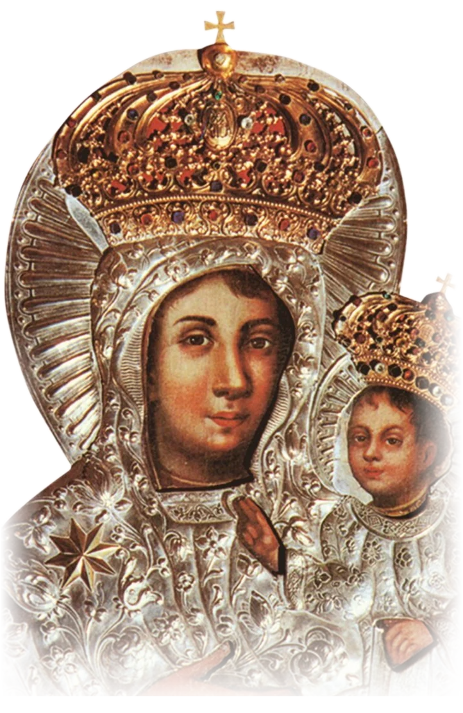
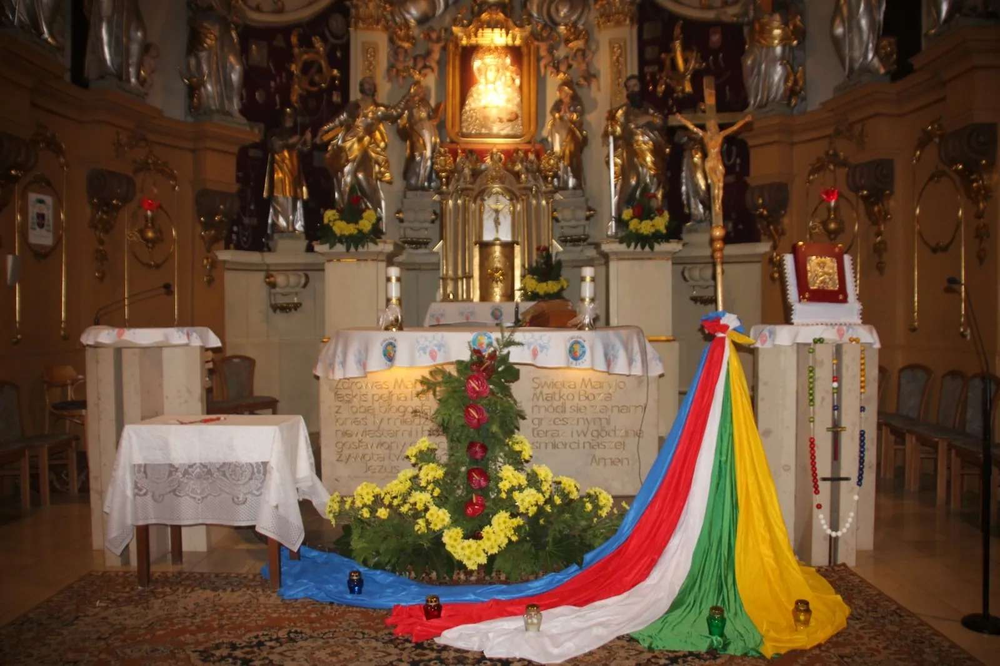
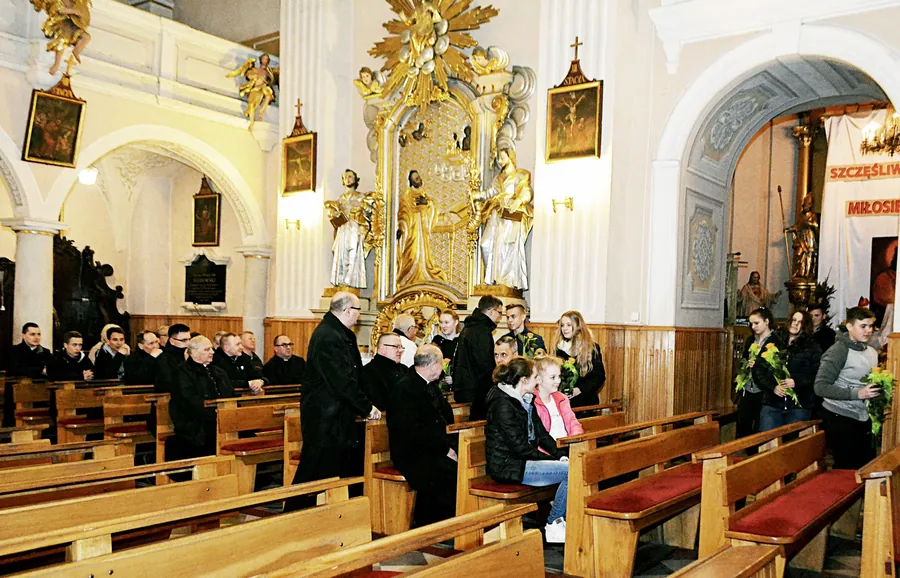
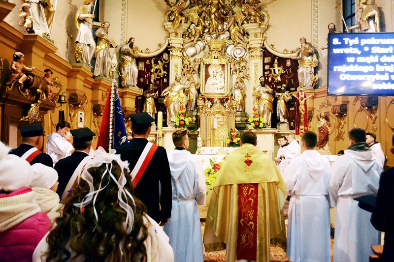
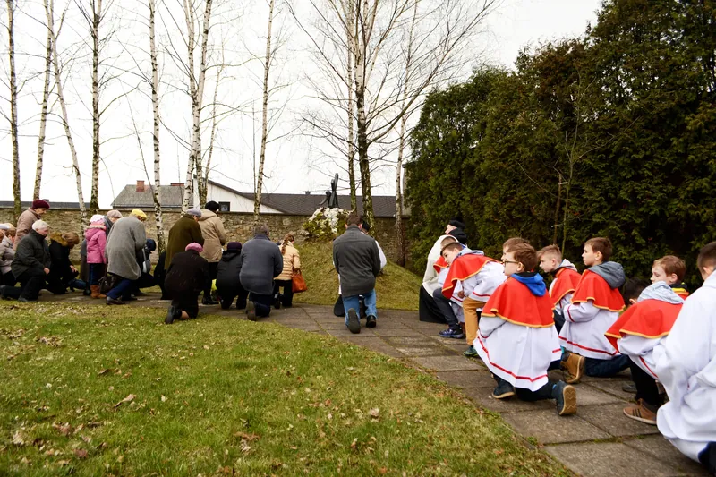
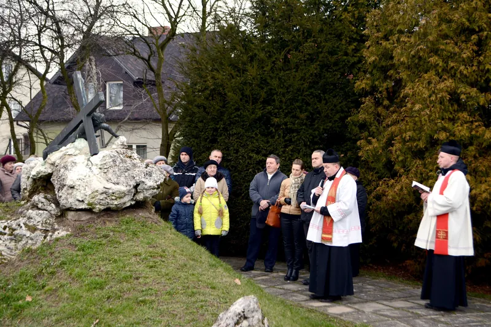
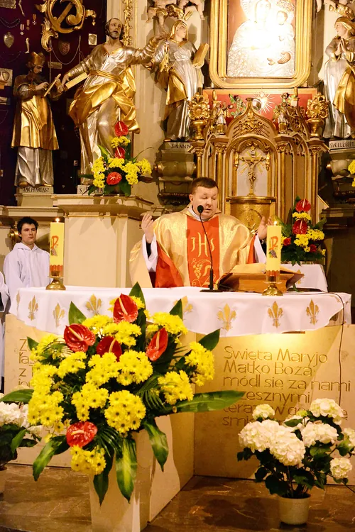
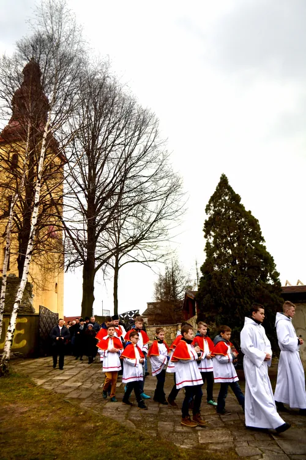
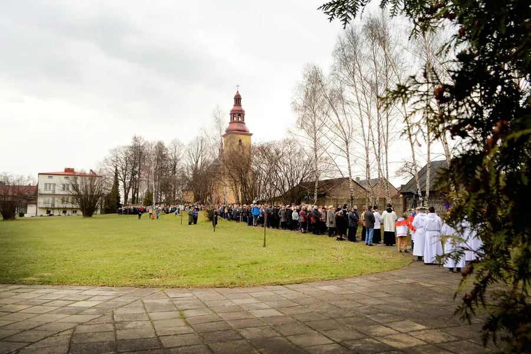

Myszków-Mrzygłód, ul. Królowej Jadwigi 9
Sanktuarium Matki Bożej Mrzygłodzkiej
Cudowny Obraz w głównym ołtarzu kościoła na wzgórzu nad Wartą, koronowany papieskimi koronami 25 sierpnia 1996 roku.
- Niedziele i święta
- 8.00 · 9.30 · 11.30 · 16.00
- Dni powszednie
- 6.30 · 17.30
Porządek Mszy Świętych i nabożeństw
Niedziele i święta kościelne
8.00 · 9.30 · 11.30 · 16.00
Dni powszednie
6.30 · 17.30
Święta zniesione
9.30 · 17.30
- Nieustanna nowenna do Matki Bożej Mrzygłodzkiejw każdą środę o 17.30
- Nabożeństwa majowe i październikowew niedziele o 16.45, w dni powszednie o 18.00
- Czuwanie pokutno-fatimskiew piątek przed I sobotą miesiąca, od Mszy o 17.30 do 22.00
- Apel Maryjnyw każde święto maryjne o 21.00, prowadzi młodzież z Ruchu Światło-Życie
- Spowiedźprzed i w czasie każdej Mszy; w I piątek miesiąca 6.15-7.00 oraz od 16.30
Uroczystości w sanktuarium
15 sierpnia
Wniebowzięcie NMP
Główna uroczystość odpustowa, suma o 12.00 przy ołtarzu polowym.
15-22 sierpnia
Dni Mrzygłodzkie
Codziennie o 18.00 pielgrzymki kapłanów i wiernych z dekanatów regionu myszkowsko-zawierciańskiego.
Niedziela po 15 sierpnia
Rocznica Koronacji
O 16.00 procesja z Obrazem z placu koronacyjnego do sanktuarium i Eucharystia.
I niedziela października
Odpust NMP Różańcowej
Suma o 12.00 i procesja różańcowa do pięciu ołtarzy.
Ogłoszenia i intencje
Ogłoszenia parafialne z każdej niedzieli i intencje mszalne na cały tydzień, od najnowszych.
-
Intencje na tydzień 1-8 listopada 2026
Uroczystość Wszystkich Świętych, Msza na cmentarzu i procesja za zmarłych, a przez całą oktawę Msze za zmarłych polecanych w wypominkach.
-
XXX Niedziela Zwykła - 25 października 2026
Każdego dnia Bóg zaprasza nas do pomnażania wiary, nadziei i miłości, nakazując: „Będziesz miłował”.
-
Odpust NMP Różańcowej
Suma odpustowa połączona z procesją różańcową do pięciu ołtarzy. Zapraszamy parafian, poczty sztandarowe i strażaków.

Obraz, który patrzy na każdego
Kult Matki Bożej w Mrzygłodzie sięga 1644 roku, gdy w parafii zaprowadzono Arcybractwo Różańca Świętego. Obecny wizerunek, namalowany przez artystę Ciszewskiego z fundacji dziedzica Łukasza Bnińskiego, od 1804 roku jest w głównym ołtarzu. Przedstawia Matkę Bożą z Dzieciątkiem w typie Hodegetrii, w srebrnej sukience z pozłacaną gwiazdą.
„Szczęśliwe oczy w obrazie Maryi zdają się patrzeć na ciebie, gdziekolwiek klęczysz.”ks. Romuald Wójcik, proboszcz w latach 1903-1915
- 1373Mrzygłód wymieniony jako nowo powstała parafia
- ok. 1644murowany kościół na wzgórzu, fundacji Stanisława Warszyckiego
- 1804obecny Obraz Matki Bożej w ołtarzu głównym
- 1986odnowienie kultu przez biskupa Stanisława Nowaka
- 25.08.1996koronacja papieskimi koronami przez kard. Adama Maidę
Kościół, Kalwaria i wspólnota






1 / 6
Dla pielgrzymów
Przybycie pielgrzymki prosimy zgłosić u kustosza sanktuarium. Każda grupa, po wcześniejszym uzgodnieniu, może mieć Mszę Świętą i oprowadzenie po sanktuarium, a przy zgłoszeniu zamówić herbatę.
Zachęcamy do odprawienia Drogi Krzyżowej na Kalwarii Jurajskiej, ze stacjami rzeźbiarza Tadeusza Tellera. Pamiątki są w sklepiku w Domu Pielgrzyma i w zakrystii.
Dom Pielgrzyma
Rekolekcje i dni skupienia dla wspólnot i osób indywidualnych. Do dyspozycji: kaplica, sale konferencyjne, ołtarz polowy, muszla koncertowa, boisko, altanka z grillem i miejsce na ognisko.
Zgłoś pielgrzymkę: 608 45 00 04ks. Jacek Gancarek, proboszcz i kustosz sanktuarium

Kancelaria parafialna
Czynna codziennie, oprócz niedziel i świąt, pół godziny przed i po Mszy Świętej.
W sprawach pilnych o każdej porze lub telefonicznie.
- Proboszcz ks. Jacek Gancarek608 45 00 04
- Wikariusz ks. Marek Skrzypczyk503 067 705
- Organista Piotr Jastrząbek600 390 025
Sakramenty - co przygotować
Chrzest Święty
Zgłoszenie w kancelarii co najmniej dwa tygodnie przed chrztem, najlepiej z rodzicami chrzestnymi. Chrzest w niedzielę na Mszy o 11.30. Katecheza dla rodziców i chrzestnych raz w miesiącu po Mszy wieczornej.
Pierwsza Komunia Święta
Tradycyjnie w Uroczystość Zesłania Ducha Świętego. Datę podaje ksiądz proboszcz na wrześniowym spotkaniu rodziców. Msza dziecięca w niedzielę o 11.30.
Bierzmowanie
Msza dla młodzieży w niedzielę o 9.30, spotkanie formacyjne raz w miesiącu po tej Mszy, czuwanie młodzieżowe w I piątki o 20.00.
Małżeństwo
Narzeczeni zgłaszają się do kancelarii co najmniej 3 miesiące przed planowaną datą ślubu, ze świadectwem chrztu z adnotacją o bierzmowaniu i dowodami osobistymi.
Sakrament chorych
Chorych zgłaszamy w zakrystii lub kancelarii. Kapłani odwiedzają chorych w domach cztery razy w roku oraz w pierwsze piątki miesiąca, od 8.00.
Pogrzeb
Rodzina najpierw ustala w kancelarii datę i godzinę Mszy pogrzebowej, a dopiero potem formalności w zakładzie pogrzebowym. Potrzebny skrócony odpis aktu zgonu z USC.
Wspólnoty parafialne
Liturgiczna Służba Ołtarza, Dziecięcy chórek parafialny, Oaza - Ruch Światło-Życie, Akcja Katolicka, Koła Żywego Różańca, Rada Parafialna i Ekonomiczna, Papieskie Dzieło Misyjne Dzieci, Wspólnota Miłosierdzia Bożego, Wolontariat młodych, Klub Malucha.
Kontakt i dojazd
Rzymskokatolicka Parafia NMP Różańcowejul. Królowej Jadwigi 9
42-300 Myszków
e-mail: parafia.mrzyglod@o2.pl
Dojazd
Pociągiem: linia PKP Częstochowa-Katowice.
Autobusem z Zawiercia lub MPK z Myszkowa.
Ofiary na sanktuariumBOŚ Bank 77 1540 1014 2101 7322 3892 0001
„Maryja jest jak Gwiazda, która rozświetla nasze ścieżki i to Ona pokaże Ci bezpieczną drogę do Ojca Niebieskiego.”Ojciec Pio